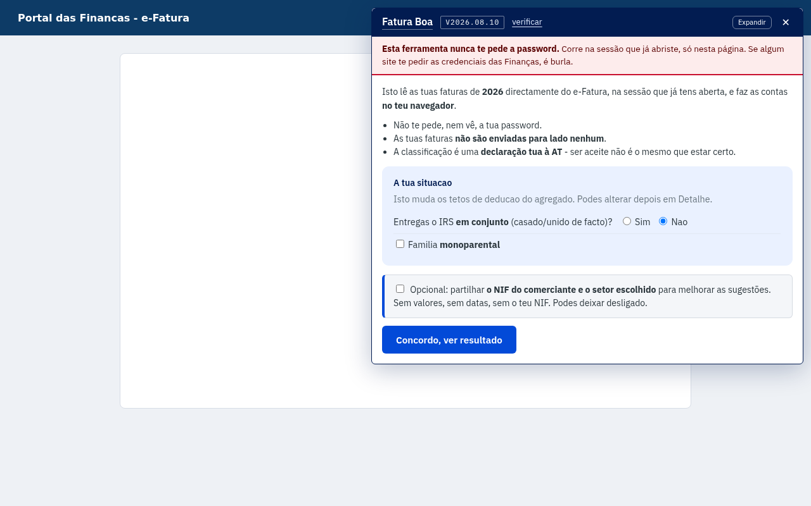
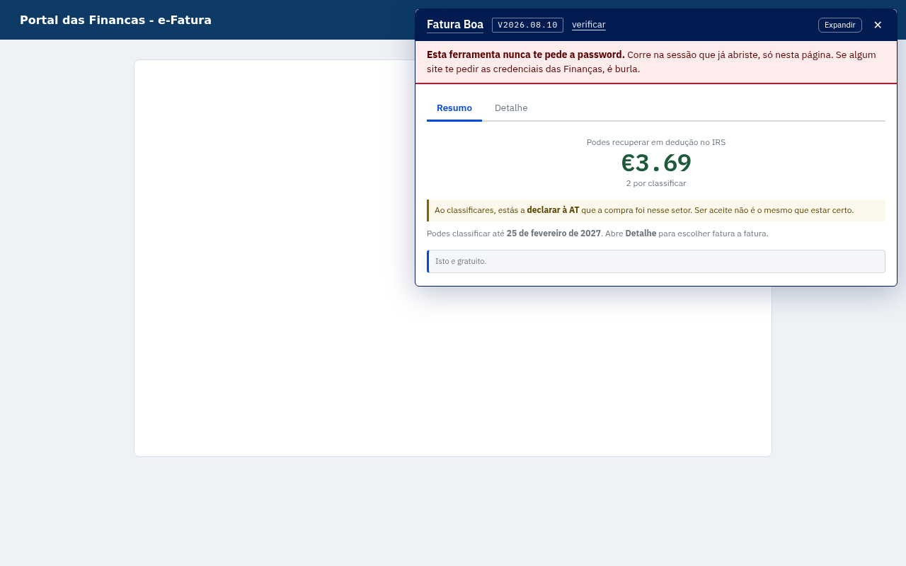
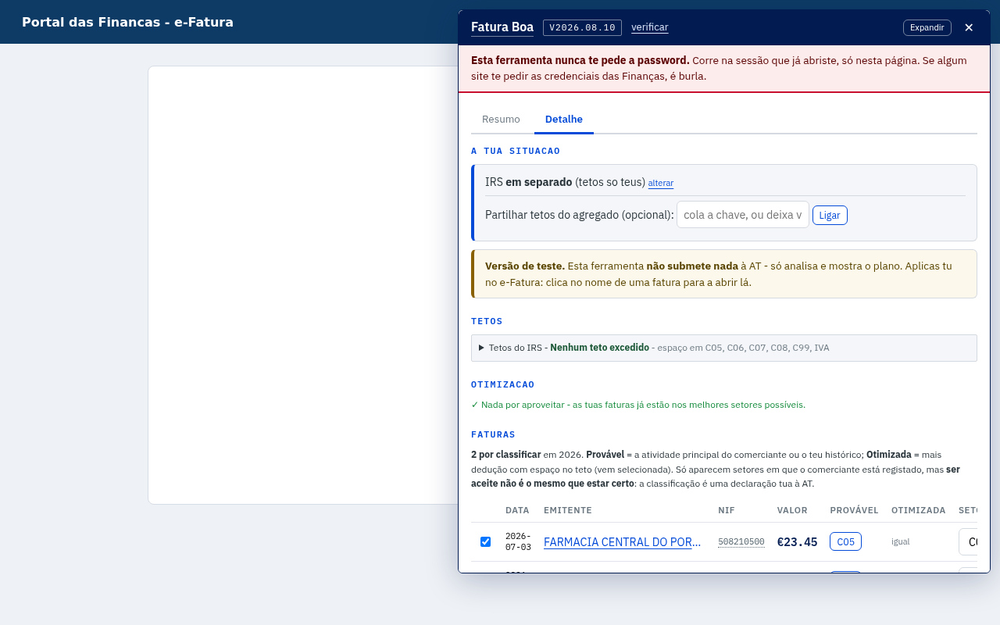
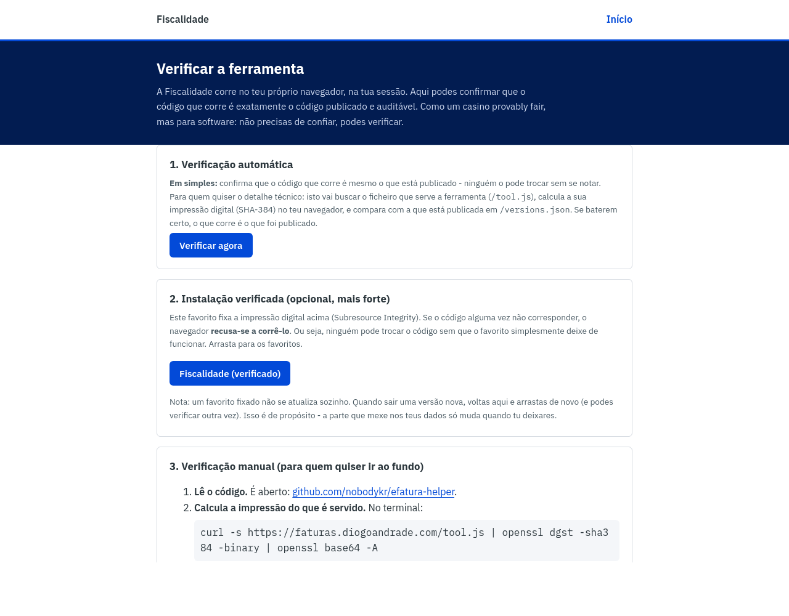

|
Fiscalida.de
Uma forma mais clara de olhar para a tua situação fiscal
Das fontes oficiais, dentro da tua sessão e sem partilhares a palavra-passe.
|
|
Olá,
Tenho andado a construir a Fiscalidade. A primeira ferramenta chama-se Fatura Boa e ajuda a perceber o e-Fatura e o resto da situação fiscal sem pedir a tua palavra-passe nem enviar as tuas faturas para fora do navegador.
Ainda está em testes. Queria mostrar-te o que já faz e perceber se resolve os problemas que realmente aparecem quando se usa o Portal das Finanças.
|
1 · Antes de ler qualquer coisaA extensão explica o que vai ler e pede autorização. Funciona dentro das páginas oficiais onde já tens sessão iniciada; não vê nem pede a palavra-passe.  |
2 · Resumo das faturasMostra rapidamente o que está pendente, como estão os tetos de dedução e onde pode haver faturas a rever.  |
3 · Plano para rever as pendentesPara cada fatura, compara a atividade oficial do comerciante com os setores possíveis. A sugestão é para rever: o último passo e a responsabilidade de classificar continuam a ser teus.  |
4 · A tua situação fiscal num só lugarA vista de perfil junta dívidas e prazos, IRS, rendas, atividade, IMI e movimentos financeiros. Este exemplo é inteiramente fictício. |
5 · Não tens de confiar só na explicaçãoA página de verificação confirma o código publicado, e a auditoria liga cada regra ao código e à fonte legal oficial.  |
Diz-me qual é a parte do e-Fatura ou das Finanças que normalmente te dá mais trabalho. Se quiseres experimentar, responde-me e abro-te acesso temporário. Não preciso que me envies NIF, documentos, capturas do teu registo ou qualquer palavra-passe.
Mais informação sobre o modelo de segurança em fiscalida.de/privacidade. A ferramenta é independente e não é afiliada à Autoridade Tributária.
Obrigado,
Diogo Andrade
diogo@fiscalida.de
|